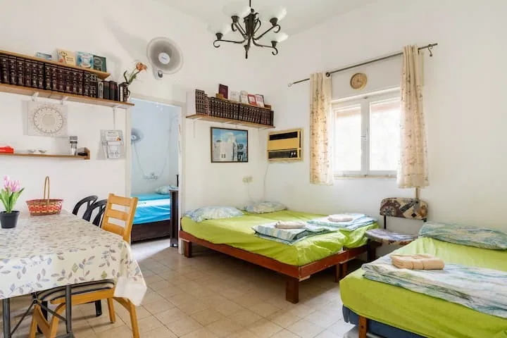
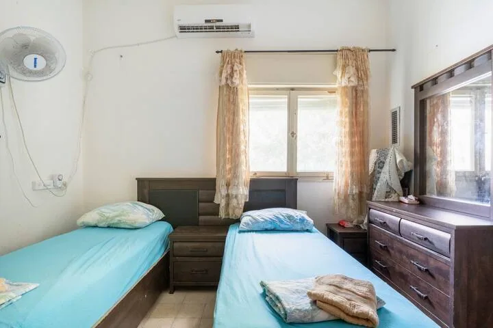
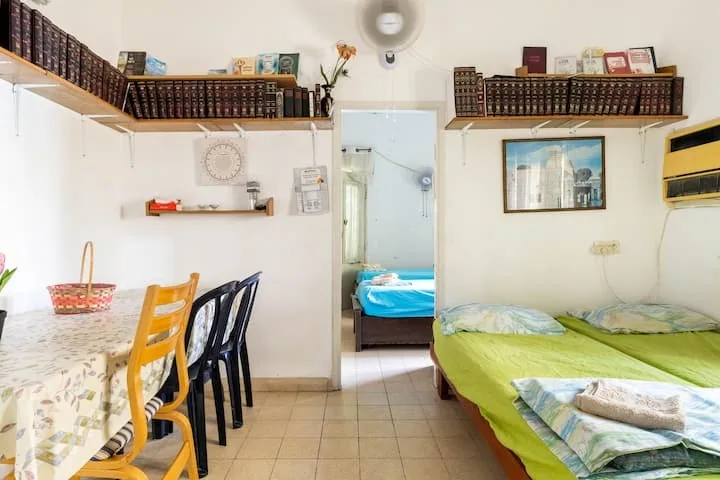
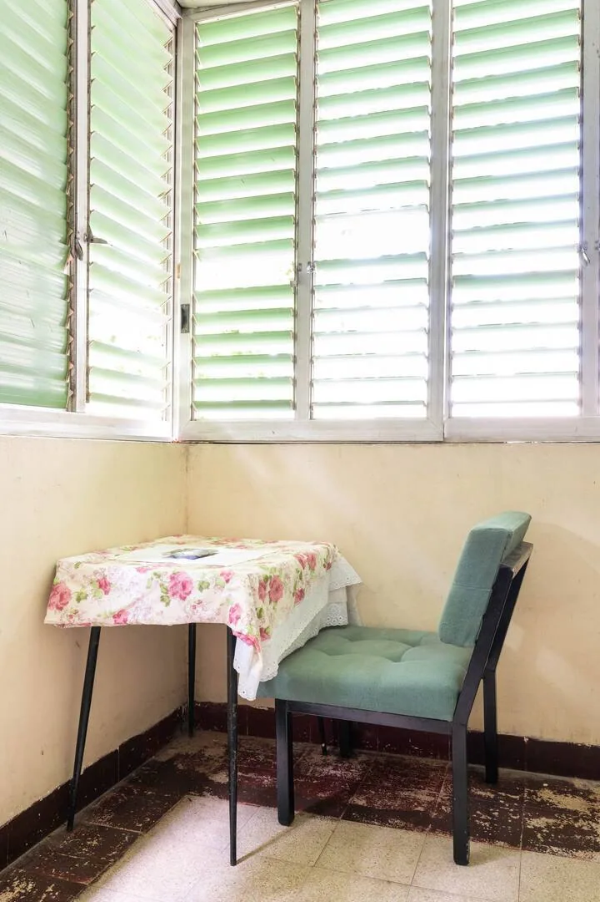
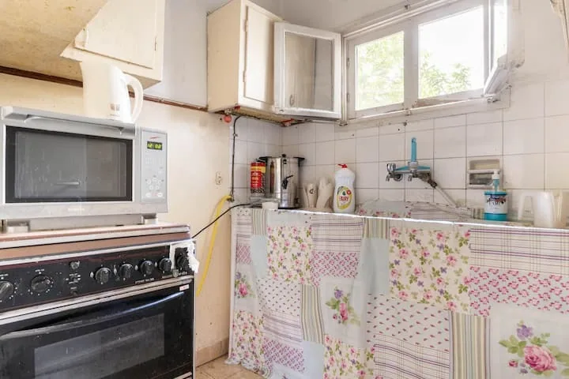
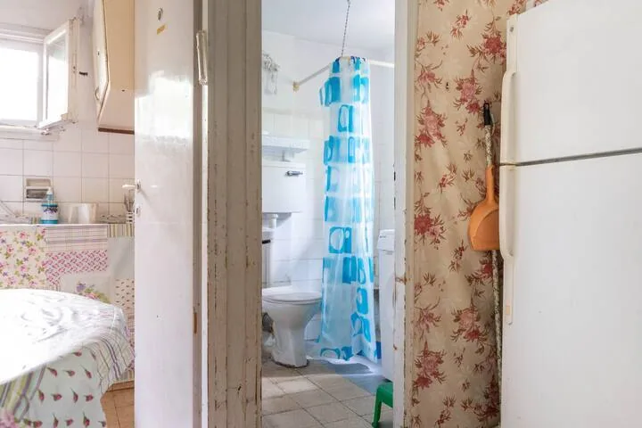
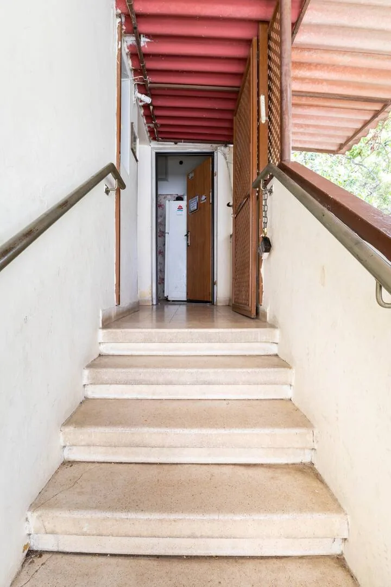

דִּירָה נֶחְמָדָה, בְּמַצָּב טוֹב.
קַבָּלַת פָּנִים מְלֵאַת שִׂמְחָה וְאַהֲבָה לְכָל אוֹרֵחַ.
הַדִּירָה בְּאֵזוֹר שָׁקֵט וְנָעִים. וְקָרוֹב לְכָל מָה שֶׁתִּרְצוּ:
בְּמֶרְחַק הֲלִיכָה שֶׁל שָׁלוֹשׁ דַּקּוֹת תִּמְצְאוּ: חֲנוּת אֹכֶל גְּדוֹלָה הַפְּתוּחָה עַד 12 בַּלַּיְלָה. חֲנוּת בה נִתָּן לִקְנוֹת הַכֹּל כְּלֵי בַּיִת, חַד פַּעֲמִי, כְּלֵי כְּתִיבָה, כְּלֵי מִטָּה וְעוֹד.
חֲנוּת יְרָקוֹת וּפֵרוֹת.
שתי חנויות פיצה, חנות קפה
בַּדִּירָה תִּמְצְאוּ צִיּוּד מָלֵא לְאֵרוּחַ: מְקָרֵר, קֻמְקוּם חַשְׁמַלִּי, שֻׁלְחָן, מַפָּה, וְעוֹד וְעוֹד.
הַדִּירָה לֹא חֲדָשָׁה, אֲבָל הַכֹּל תַּקִּין וְטוֹב. הָאוֹרְחִים שֶׁבָּאִים מִיְּדֵי שָׁבוּעַ נֶהֱנִים וּמְאֻשָּׁרִים. תּוּכְלוּ לִשְׁמֹעַ מֵהֶם.
חדר הורים

אֲנַחְנוּ כָּל כָּךְ שְׂמֵחִים שֶׁאַתֶּם בָּאִים
וּמִשְׁתַּדְּלִים לְהָכִין לָכֶם כָּל מָה שֶׁרַק יְפַנֵּק אוֹתְכֶם
בַּדִּירָה תִּמְצְאוּ צִיּוּד מָלֵא לְאֵרוּחַ: מְקָרֵר, קֻמְקוּם חַשְׁמַלִּי, שֻׁלְחָן, מַפָּה, גַּז, וְכַמּוּבָן מִקְלַחַת נְעִימָה.
בַּמָּקוֹם תִּמְצְאוּ שְׂמִיכוֹת מִכָּל הַסּוּגִים
שְׂמִיכוֹת קַיִץ
שְׂמִיכוֹת חֹרֶף
וּשְׂמִיכוֹת פּוּךְ.
כְּמוֹ כֵן יֵשׁ כָּל מָה שֶׁצָּרִיךְ לְכוֹס קָפֶה חַם וְטוֹב
מֵחַם,קָפֶה, סֻכָּר,כּוֹסוֹת חַד פַּעֲמִי לְקָפֶה. וְחָלָב.
חדר שני - אלו שני חדרים פנימי וחיצוני.

הדִּירָה נִמְצֵאת בִּרְחוֹב שֶׁקֶט בְּסָמוּךְ לְמֶרְכַּז הָעִיר.
קָרוֹב לְכָל בָּתֵּי הַכְּנֶסֶת.
מֶרְחָק שָׁלוֹשׁ דַּקּוֹת מֵהַגִּנָּה הַצִּבּוּרִית.
סָמוּךְ לְתַחֲנַת אוֹטוֹבּוּס לְחֵיפָה, רְכָסִים, לְמֶרְכָּז וְלִירוּשָׁלַיִם.
מֶרְחָק 2-3 דַּקּוֹת מִמַּכֹּלֶת שְׁכוּנָתִית.
וְכֵן חֲנוּת גְּדוֹלָה מְאוֹד שֶׁל זוֹל סְטוֹק שָׁם תִּמְצְאוּ אֶת כָּל מָה שֶׁתִּצְטָרְכוּ
בִּמְחִיר זוֹל מְאוֹד.
גַּם חֲנוּת פִּיצָה וּמִסְעָדָה יֵשׁ קָרוֹב מְאוֹד.
מרפסת אוויר

עִם אַתֶּם צְרִיכִים הֲנָחָה נִשְׂמַח לָתֵת אִם יֵשׁ בְּאֶפְשָׁרוּתֵנוּ - לִפְרָטִים מְלֵאִים יֵשׁ לִשְׁלֹחַ בַּקָּשָׁה.
הַדִּירָה מַתְאִימָה לָשֶׁבֶת. יֵשׁ בַּמָּקוֹם אֶת כָּל הַצִּיּוּד הַנִּצְרָךְ לָשֶׁבֶת, כּוֹלֵל אוֹר שִׁכְבָה בַּלַּיְלָה, פָּלְטָה מֵחַם לָשֶׁבֶת וְעוֹד.
מְחַכִּים לָכֶם...
מטבח קטן ומאובזר

דברים נוספים שכדאי לדעת
דִּירַת הָאֵרוּחַ כּוֹלֶלֶת:
דִּירָה שְׁלֵמָה עִם פְּרָטִיּוּת מְלֵאָה.
דִּירָה בְּבִנְיַן פְּרָטִי מֻקָּף בַּעֲצֵי אֶרֶץ הַקֹּדֶשׁ.
5 מִטּוֹת עִם מִזְרוֹנִים רְחָבִים וְנוֹחִים
אֶפְשָׁרוּת לְעוֹד 3 מִזְרוֹנִים
לוּל לְתִינוֹק
כָּרִיּוֹת לְכֻלָּם
שְׂמִיכוֹת קַיִץ
שְׂמִיכוֹת חֹרֶף
אֶפְשָׁרוּת לַמַּצָּעִים
נֵרוֹת שַׁבָּת
שֻׁלְחָן עִם מַפַּת שַׁבָּת.
גְּבִיעַ לְקִדּוּשׁ.
מֵחַם לָשֶׁבֶת
מְנוֹרָה לָשֶׁבֶת (כִּסּוּי הָאוֹר בַּלַּיְלָה)
נְיַר טוּאָלֵט לָשֶׁבֶת וְטִישׁוּ.
סַבּוֹן יָדַיִם וְסַבּוֹן רַחֲצָה.
מַגָּבוֹת יָדַיִם וּפָנִים.
פְּלָטָה
קָפֶה/סֻכָּר
חָלָב
עוּגָה
מְקָרֵר גָּדוֹל
מִשְׂחָקִים לִילָדִים
נַדְנֵדַת גַּן מִתַּחַת עֵץ הָאֱגוֹז.
סְפָרֶיהָ בַּמָּקוֹם.
כִּסְאוֹת בְּשֶׁפַע.
מִקְלַחַת עִם מַיִם חַמִּים.
וְגַם כּוֹסוֹת וְחַד פַּעֲמִי – חִנָּם.
מקלחת ושירותים

חצר עם משחקים

נִתָּן לְקַבֵּל תְּמוּנוֹת שֶׁל הַמָּקוֹם.
נִתָּן לְקַבֵּל טֵלֵפוֹנִים שֶׁל אוֹרְחִים קוֹדְמִים לִשְׁמֹעַ כַּמָּה הָיוּ מְרֻצִּים.
הדירה נמצאת בקומה אחת מעל הקרקע

ניתן להזמין את הדירה בכל עת
להזמנות - 0527139520
,או בווטסאפ לחץ כאן https://wa.me/972527139520?text=אני מתעניין לגבי הדירת אירוח שלכם בקרית אתא
מחירון:יום חול - 200 ש"ח לאדם בודד או לזוג.
שבת - 300 ש''ח לאדם בודד 350
לזוג.400 - זוג עם 2-3 ילדים.
אפשר גם לפעמים לקבל הנחה לפי הצורך.